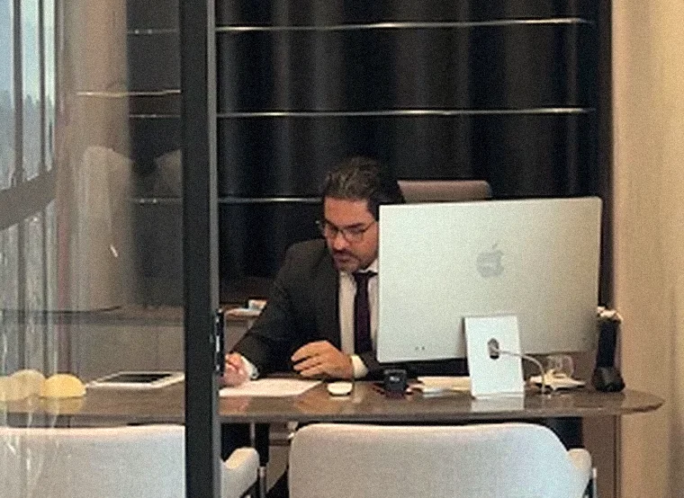
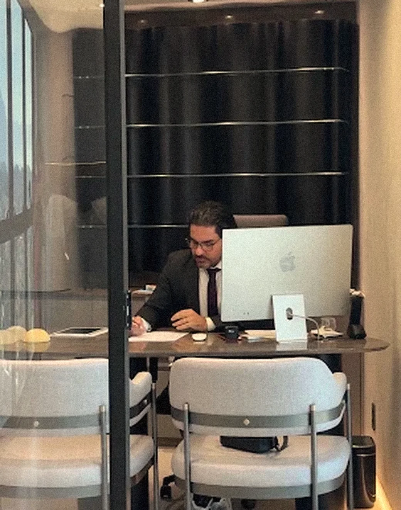
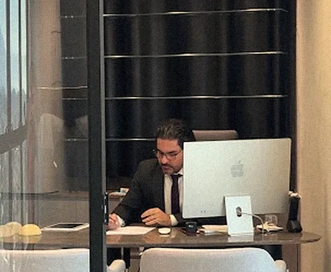
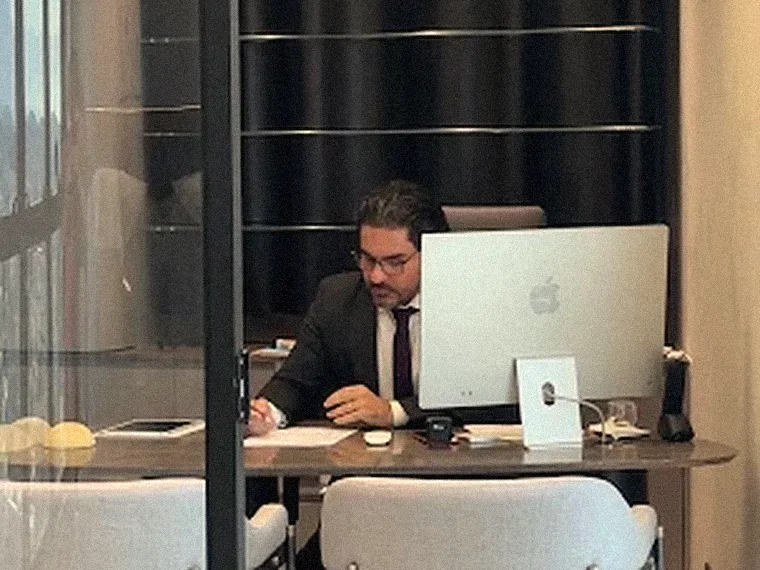
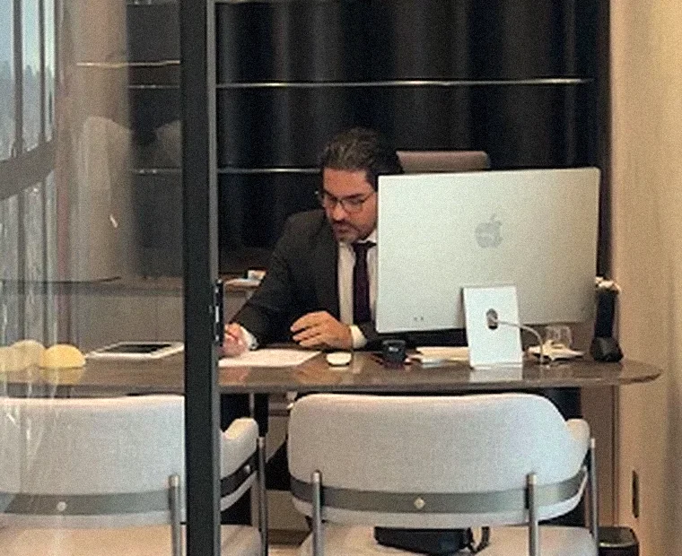

Cirurgia plástica do começo ao fim
Sou o Guilherme, cirurgião plástico. Avalio, planejo e opero cada paciente, e acompanho até o último retorno. Sem pressa e sem tabela pronta.
Agendar avaliaçãoMais de 1h30 de conversa, exame e planejamento.
Cirurgia plástica com nome e sobrenome
CRM/RJ 52886840 · RQE 27101
Sobre mim
Sou cirurgião plástico formado pela UFRJ e acompanho cada paciente da primeira consulta ao último retorno. Aqui não existe tabela pronta: existe o seu plano.
Formação e rotina, em números
- 1h30+
- de primeira avaliação
- 2017
- residência em Cirurgia Plástica, UFRJ
- IMC 28
- limite recomendado para operar com segurança

Formação
Nove anos de formação até a Cirurgia Plástica
- 2008MedicinaPontifícia Universidade Católica do Paraná
- 2012Residência em Cirurgia GeralHospital Federal de Ipanema
- 2017Residência em Cirurgia PlásticaHospital Universitário Clementino Fraga Filho, UFRJ
- HojeEspecialista em Cirurgia PlásticaCRM/RJ 52886840 · RQE 27101
Procedimentos
O que eu opero, e como eu decido a técnica
- 01Mama
Prótese de silicone
Aumento com implante. Volume, perfil e incisão definidos a partir das suas medidas.
- 02Mama
Mastopexia
Reposiciona a mama e trata a flacidez. Pode ser associada à prótese quando falta volume.
- 03Mama
Mamoplastia redutora
Reduz o volume da mama para aliviar o peso nas costas e devolver a proporção.
- 04Abdome
Abdominoplastia
Retira o excesso de pele e reaproxima a musculatura afastada depois da gestação ou do emagrecimento.
- 05Abdome
Lipoabdominoplastia
Abdominoplastia associada à lipo, para tratar pele e gordura no mesmo tempo cirúrgico.
- 06Corpo
Contorno corporal
Lipoaspiração para gordura localizada e, quando indicado, Argoplasma para a flacidez da pele.
A indicação é sempre individual: a técnica sai da avaliação, não do nome do procedimento.
Primeira consulta
Primeiro eu escuto, depois eu opero
A primeira avaliação dura mais de 1h30: conversa, exame e planejamento. Você sai dela sabendo a técnica indicada, as etapas e o investimento.
Dr. Guilherme Pansardi
Médico · Cirurgião Plástico
CRM/RJ 52886840 · RQE 27101
Prefere tirar dúvidas antes de vir? Fale com a minha secretária pelo WhatsApp: ela explica como é a consulta e o que trazer.
Falar no WhatsApp
- IMC recomendado para operar
- <28
- Duração da primeira avaliação
- 1h30 ou mais
Planejamento100% individual
A jornada
Do primeiro contato à alta, você sabe sempre qual é o próximo passo e com quem falar.
- 01
Contato
A secretária tira as primeiras dúvidas pelo WhatsApp e marca a sua avaliação.
- 02
Avaliação
Mais de 1h30 comigo: conversa, exame, técnica indicada, etapas e investimento.
- 03
Preparo
Exames pré-operatórios e os critérios de segurança, como o IMC abaixo de 28.
- 04
Cirurgia e pós
A cirurgia e os retornos programados, comigo, até a alta.
Recuperação
Como costuma ser o pós-operatório
- 1ª semanaRepouso relativo
Sutiã cirúrgico, braços poupados e os primeiros retornos.
- ~15 a 20 diasRetomada leve
Volta gradual ao trabalho e às tarefas do dia a dia.
- ~30 a 45 diasAtividade física
Exercícios liberados aos poucos, conforme a orientação.
- 3 a 6 mesesResultado
O implante se acomoda e a forma final se define.
- 1ª semanaRepouso
Cinta compressiva, caminhadas curtas e os primeiros retornos.
- ~20 a 25 diasRetomada leve
Retorno gradual a trabalhos leves, ainda com a cinta.
- ~45 a 60 diasAtividade física
Liberação progressiva de exercícios.
- 6 a 12 mesesResultado
A cicatriz amadurece e o contorno se estabiliza.
- 1ª semanaPrimeiros dias
Malha compressiva e as drenagens indicadas.
- ~7 a 15 diasRetomada leve
Retorno ao trabalho, conforme a extensão da cirurgia.
- ~30 a 40 diasAtividade física
Exercícios liberados aos poucos.
- 3 a 6 mesesResultado
O inchaço regride e o contorno final aparece.
Prazos de referência. O cronograma de cada paciente é definido por mim na avaliação.
Por que operar comigo?
-
Implante escolhido com você, não por catálogo
-
Da avaliação ao último retorno
Planejamento individual
Antes de operar você sabe a técnica, as etapas da recuperação e o investimento.
-
3
etapas na primeira consulta: escuta, exame e plano
-
Segurança antes de tudo: IMC abaixo de 28

Avaliação com hora marcada · Nova Iguaçu
A primeira conversa já sai com um plano.
Conteúdo
As dúvidas que mais ouço no consultório
-

Investimento - Segurança
- Mama
Investimento
Por que eu não trabalho com tabela de preços
Quase toda conversa começa com a mesma pergunta: quanto custa. É uma pergunta justa, e a resposta honesta é que eu só sei depois de examinar.
Duas pessoas que pedem a mesma cirurgia raramente precisam da mesma técnica. Muda a quantidade de pele, a musculatura, a gordura, o tipo de implante, o tempo de cirurgia e o hospital.
Um preço de tabela teria que ignorar tudo isso. Por isso a primeira avaliação dura mais de 1h30: é nela que eu monto o seu planejamento.
Você sai da consulta sabendo a técnica indicada, as etapas da recuperação e o investimento, com as condições de pagamento. Aí, sim, com números que valem para o seu caso.
Agendar avaliaçãoSegurança
O que é IMC e por que ele importa para operar
IMC é o índice de massa corporal: o peso dividido pela altura ao quadrado. Não é uma medida de beleza, é um dos indicadores de risco que eu olho antes de qualquer cirurgia.
Para operar com mais segurança, eu recomendo IMC abaixo de 28. Acima disso, cresce o risco de complicações na cirurgia e na cicatrização, e o resultado tende a ser menos previsível.
Isso não quer dizer que a cirurgia está descartada. Muitas vezes o melhor plano começa com uma etapa de preparo, e a cirurgia vem quando o corpo estiver pronto.
O IMC é só um dos critérios. Na avaliação eu vejo também os exames, a sua saúde geral e o seu momento de vida, e conversamos sobre tudo isso com calma.
Agendar avaliaçãoMama
Como escolher o tamanho da prótese de silicone
O tamanho da prótese não sai de uma foto nem de um número em mililitros escolhido antes da consulta. Ele sai das suas medidas.
Na avaliação eu meço a largura da mama, a espessura da pele e do tecido e a proporção com ombros e quadril. Isso define até onde dá para ir com um resultado natural.
Dentro dessa faixa, a escolha é feita com você: o volume, o perfil do implante e o local da incisão. A gente conversa sobre o que você quer e sobre o que o seu corpo comporta.
Quando há flacidez, a prótese pode vir junto com a mastopexia, que reposiciona a mama. Tudo isso entra no planejamento antes de marcar a cirurgia.
Agendar avaliaçãoQual é o valor da cirurgia?
Eu não trabalho com tabela de preços, porque cada planejamento é individual. O investimento é apresentado depois da avaliação, junto com as condições de pagamento.
Como é a primeira consulta?
Dura mais de 1h30. Conversamos sobre o seu objetivo, faço o exame físico, explico as técnicas possíveis e monto o seu planejamento.
Existe algum pré-requisito para operar?
Para mais segurança, recomendo IMC abaixo de 28. Esse e os outros critérios, como exames e saúde geral, são avaliados na consulta.
Quanto tempo leva a recuperação?
Depende do procedimento e de cada paciente. Na avaliação eu explico as fases da recuperação do seu caso: repouso, volta ao trabalho e às atividades físicas.
Dá para fazer mais de um procedimento na mesma cirurgia?
Em alguns casos, sim, como na lipoabdominoplastia ou na prótese com mastopexia. A decisão leva em conta a segurança e o tempo de cirurgia.
Onde a cirurgia é realizada?
Em [hospital], com centro cirúrgico completo e equipe de anestesiologia.
Casos
Casos reais, com indicação, evolução e o que pode acontecer
- Procedimento
- Prótese de silicone
- Paciente
- [idade] · [biotipo]
- Indicação
- [ex.: mamas pequenas em relação ao corpo, perda de volume após amamentação]
- Técnica
- [tipo, perfil e volume do implante · via de acesso]
- Tempo de pós
- [ex.: 6 meses]
- Possíveis complicações
- Contratura capsular, assimetria, alteração de sensibilidade, cicatrização desfavorável e necessidade de reoperação.
- Procedimento
- Abdominoplastia
- Paciente
- [idade] · [biotipo]
- Indicação
- [ex.: excesso de pele e afastamento muscular após duas gestações]
- Técnica
- [abdominoplastia ou lipoabdominoplastia · plicatura]
- Tempo de pós
- [ex.: 8 meses]
- Possíveis complicações
- Seroma, hematoma, alterações da cicatriz, sofrimento de pele e trombose, por isso os critérios de segurança.
- Procedimento
- Contorno corporal
- Paciente
- [idade] · [biotipo]
- Indicação
- [ex.: gordura localizada em abdome e flancos, IMC dentro do recomendado]
- Técnica
- [lipoaspiração · áreas tratadas · Argoplasma, se usado]
- Tempo de pós
- [ex.: 4 meses]
- Possíveis complicações
- Irregularidades de contorno, seroma, hematoma, alteração de sensibilidade e assimetria.
Imagens publicadas com autorização por escrito, sem identificar a paciente e com finalidade educativa (Resolução CFM nº 2.336/2023). Cada corpo responde de um jeito: resultados variam de pessoa para pessoa.

Onde eu atendo
No Centro de Nova Iguaçu
- Endereço
- R. Cel. Bernardino de Melo, 2201, sala 1806
Centro, Nova Iguaçu · RJ · 26255-140 - Horário
- Segunda a sexta, das 8h às 18h
Com hora marcada - Telefones
- (21) 99512-1607
(21) 99536-4240
Seu plano começa numa conversa.
Deixe o seu WhatsApp. A minha secretária chama você para entender o seu objetivo e marcar a avaliação.